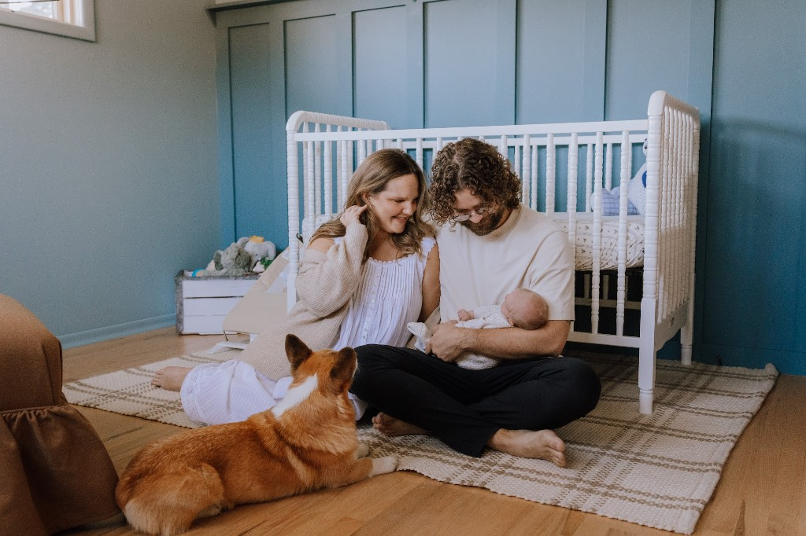
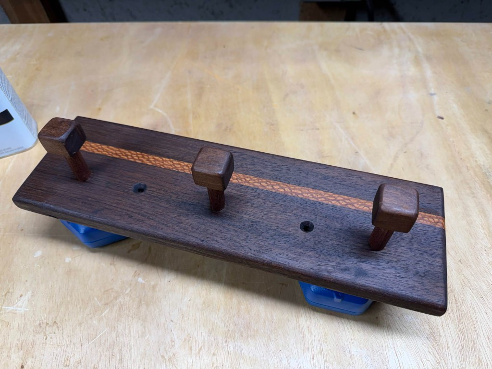
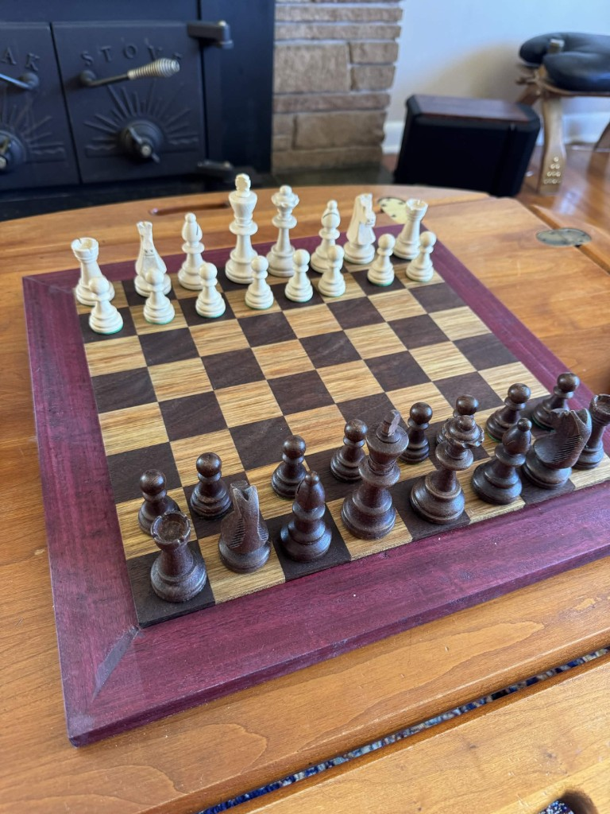
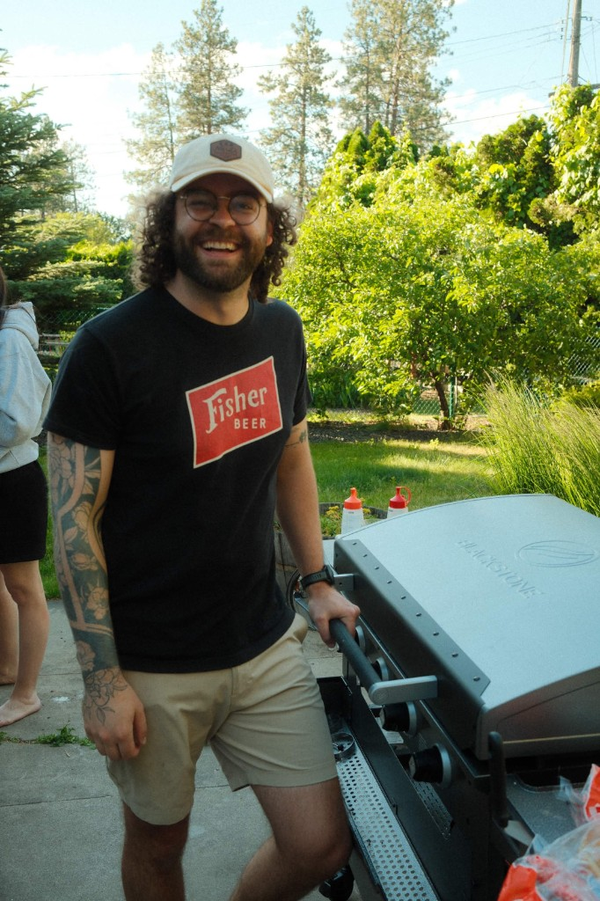
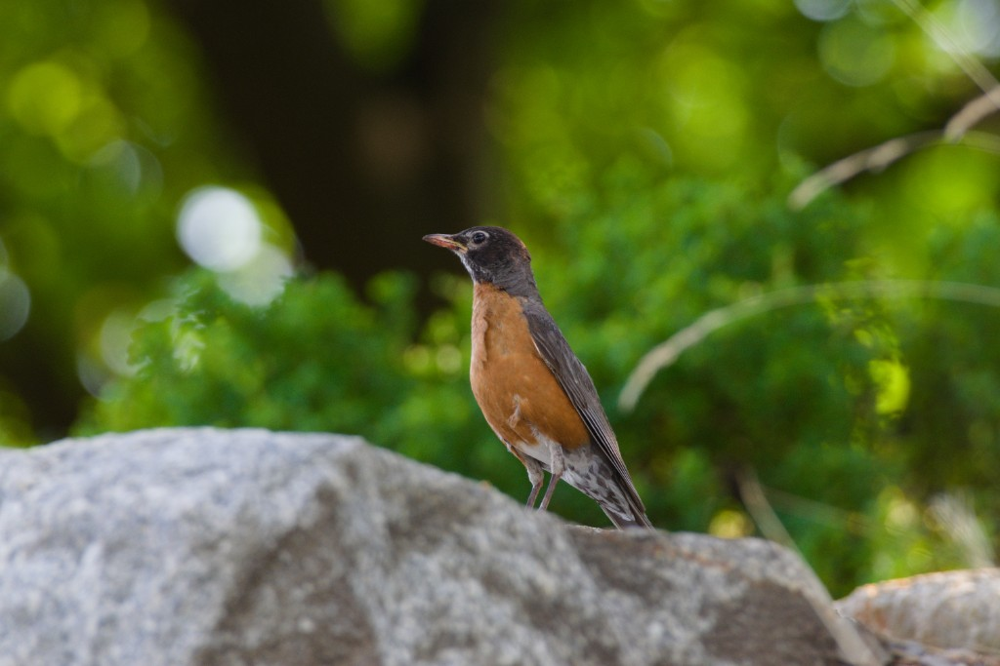
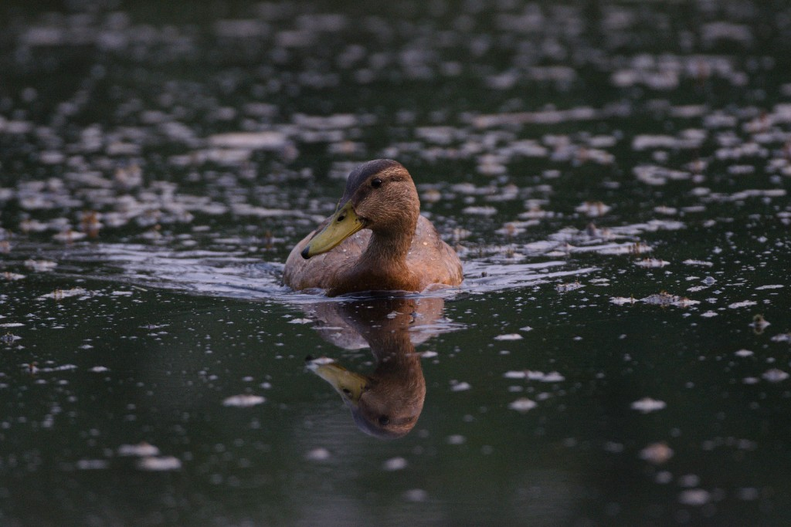
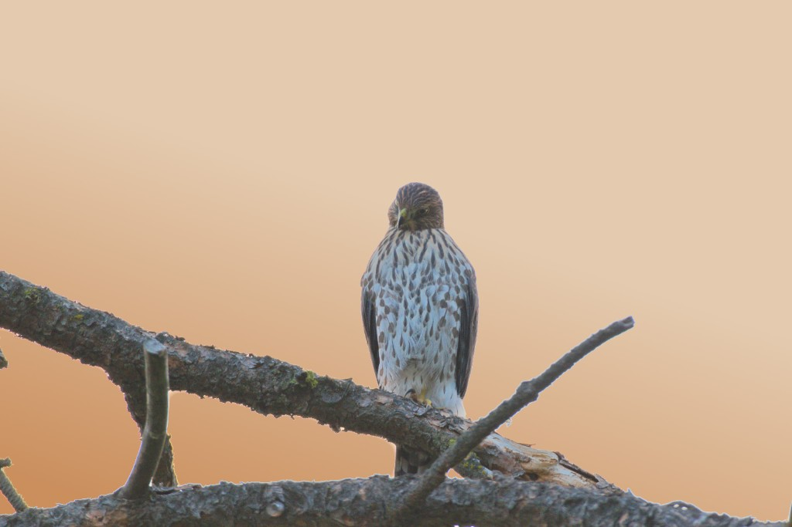
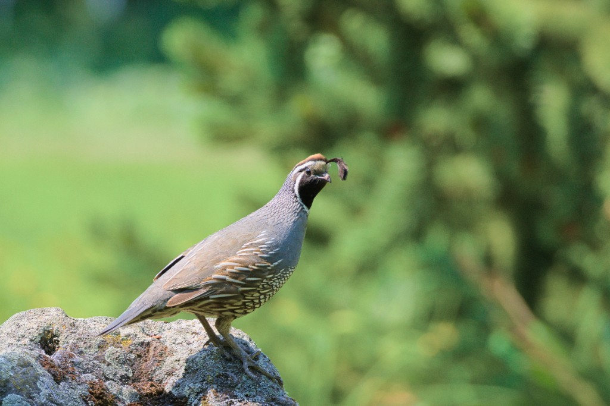
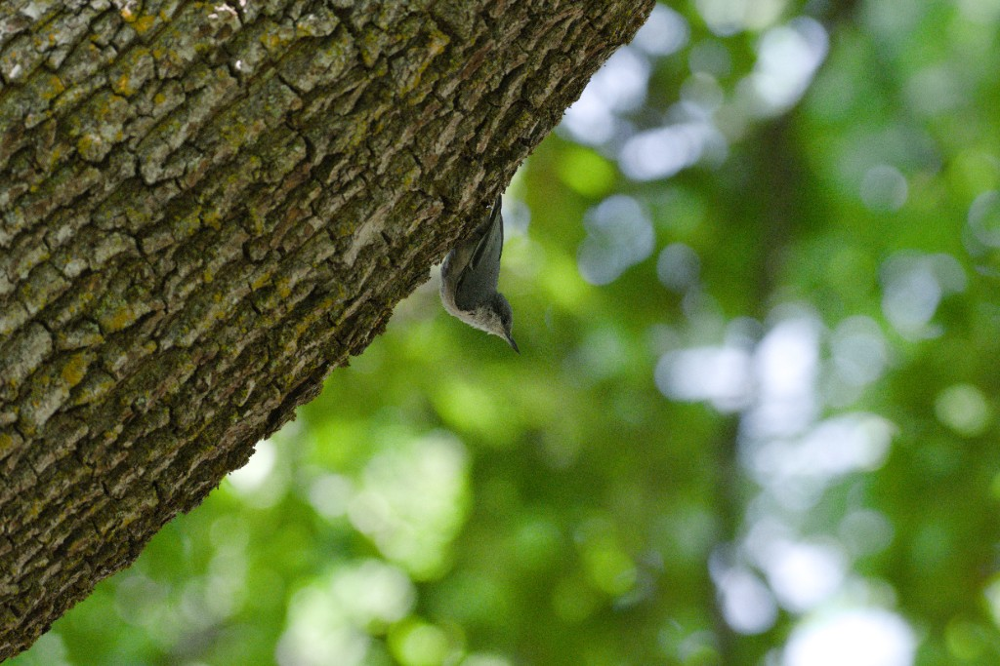
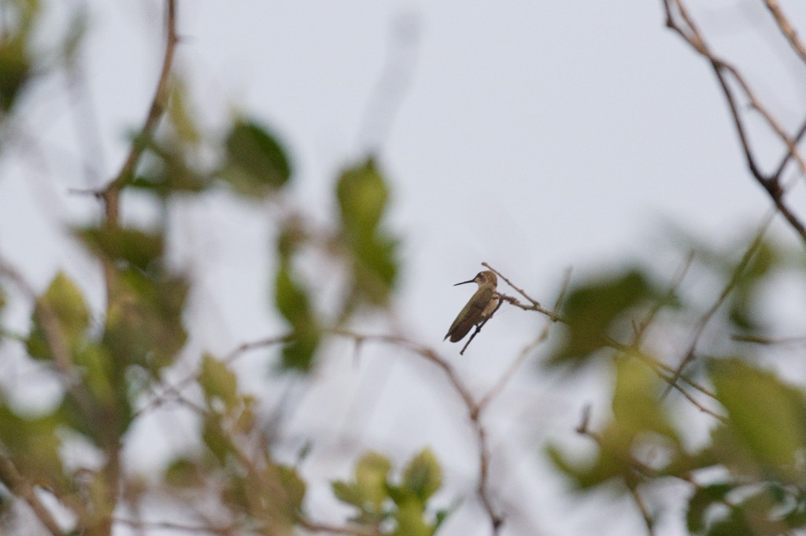

Away from the keyboard
I am a husband and a father. The rest of my time outside of work tends to be spent moving, or making something slowly.

Woodworking
I am a hobbyist woodworker. The coat rack and the chessboard below are my two most recent projects.


Running
I run. It is the simplest way I have to get outside and clear my head, and it does not ask much of a schedule that already belongs to a family and a job.
Golf
I golf. A round is a few hours with a specific problem in front of me, and then it is over. I like that shape.

Beer
I brew beer. It is a small batch of patience: a recipe, a wait, and a result you can hand to someone.

Birds
I enjoy bird photography. Birds make me stop and sit in places I would never sit otherwise.





